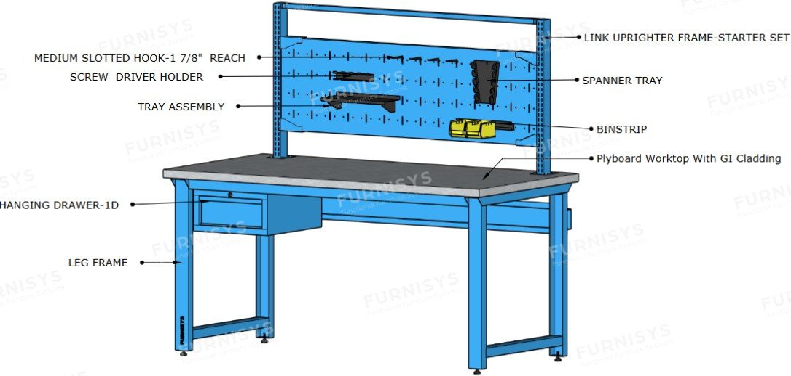

- Industry
- Defence (marine and naval engineering)
- Application area
- Maintenance
- Furnisys systems
- Pro Workstation, Link Uprighter
- Engagement
- Product configuration and after-sales service
Rough handling every day
The challenge
Their maintenance work involves heavy tooling, fixtures and system components, with impact from tools and repeated heavy loading. The workstation needed a surface that would not get damaged, integrated storage for tools and spares, and room for process changes later.
How heavy-duty is heavy-duty enough?
The question
How do you build a maintenance workstation that survives rough use in a defence engineering facility without limiting how it is used in future?
A Pro Series workstation
The Furnisys approach
- Pro Series frame rated for a UDL of 750–1000 kg
- Worktop of plywood cladded with 2 mm GI sheet, resistant to impact, abrasion and rough handling
- Hanging drawers for hand tools, spares and maintenance items
- Link Uprighter with pegboard, spanner tray, tray assembly, screwdriver holder, bin strip and medium slotted hooks; slot-based so accessories can be added or moved

Heavy work on top, tools in fixed places
How the setup works together
Components are serviced on the GI top, spares and tools live in the drawers, and frequently used tools hang on the uprighter at ergonomic height. Each tool has a defined place, which keeps the worktop clear.
What the facility received
What the configuration enabled
- A workstation rated for 750–1000 kg
- A worktop built for impact and abrasion
- Organised storage at the point of work
- Accessories that can change as maintenance needs change
Built for the worst day
Furnisys perspective
Maintenance benches are judged on their hardest jobs, not their average ones. The Pro Series is configured for that.
Frequently asked questions
What load can a Pro Series workstation carry?
This configuration was rated for a uniformly distributed load of 750–1000 kg.
Which worktop handles heavy tools and impact?
Plywood cladded with 2 mm GI sheet, which resists impact, abrasion and rough handling.
Can uprighter accessories be changed later?
Yes. The slot-based Link Uprighter lets accessories be added, removed or repositioned.